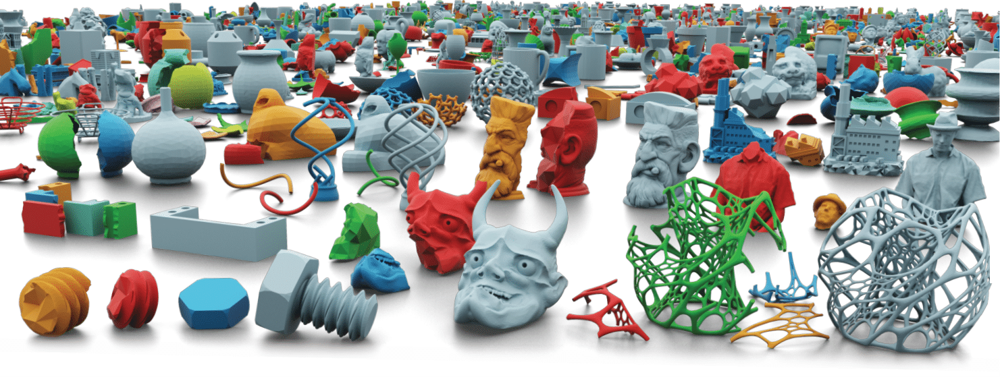
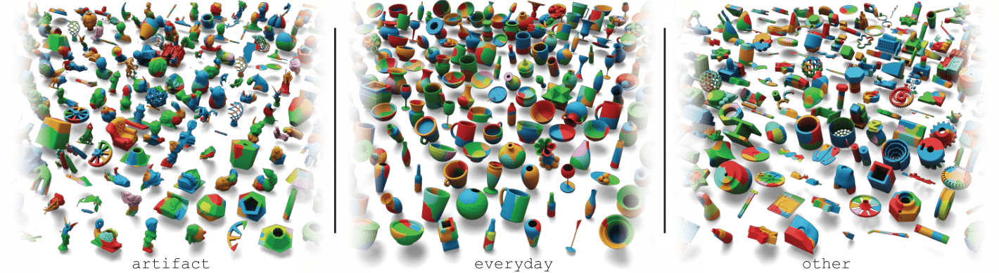

Silvia Sellán1,*,
Yun-Chun Chen1,2,*,
Ziyi Wu1,2,*,
Animesh Garg1,2,3,
Alec Jacobson1,2,4
1University of Toronto
2Vector Institute
3NVIDIA
4Adobe Research, Toronto
* Equal contribution

Our Breaking Bad Dataset contains around 10k meshes from PartNet and Thingi10k. For each mesh, we pre-compute 20 fracture modes and then simulate 80 fractures from them, resulting in a total of 1,047,400 breakdown patterns. We divide our dataset into three subsets, namely, everyday, artifact and other to faciliate different applications.
See README for detailed instructions.
Please see our benchmark results on geometric assembly in the paper. We release our benchmark code at Github.
Our dataset is divided into three categories:
The artifact category consists of fractures of meshes from Thingi10k which are tagged as "sculpture" or "scan", for use in archelogical reconstruction. Click here for a gallery view of some results.
The everyday category consists of fractures of all the meshes from the following 20 categories of the PartNet dataset (click on the names for a result gallery view):
BeerBottle,
Bottle,
Bowl,
Cookie,
Cup,
DrinkBottle,
DrinkingUtensil,
Mirror,
Mug,
PillBottle,
Plate,
Ring,
Spoon,
Statue,
Teacup,
Teapot,
ToyFigure,
Vase,
WineBottle,
WineGlass.
The other category contains fractures of all other meshes in Thingi10k. Click here for a gallery view of some results.
